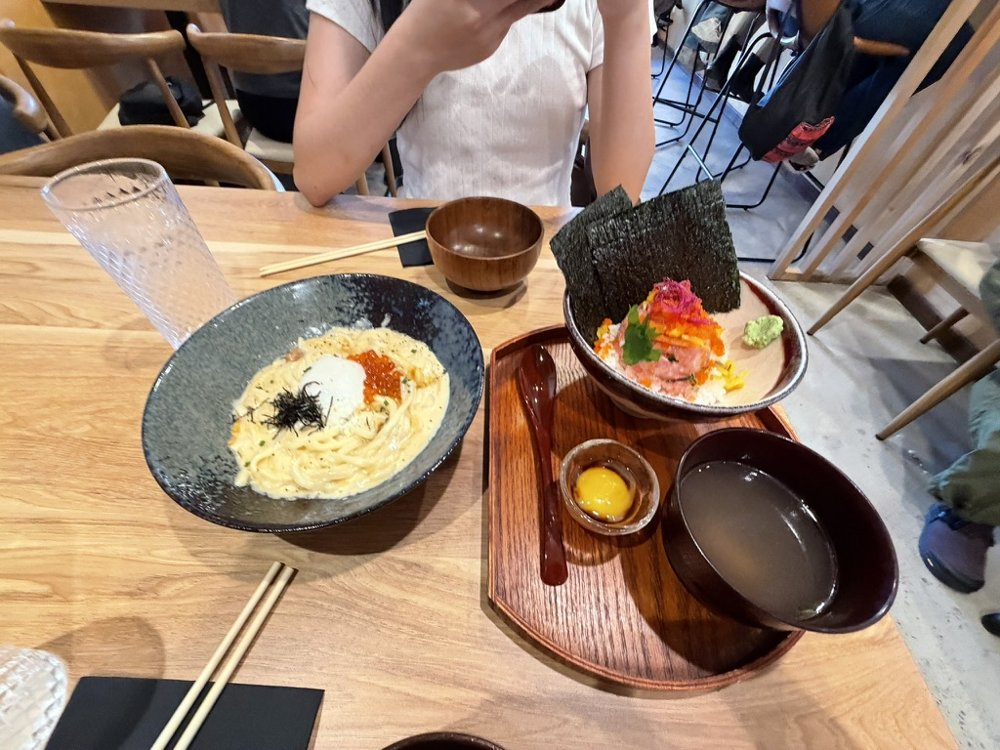
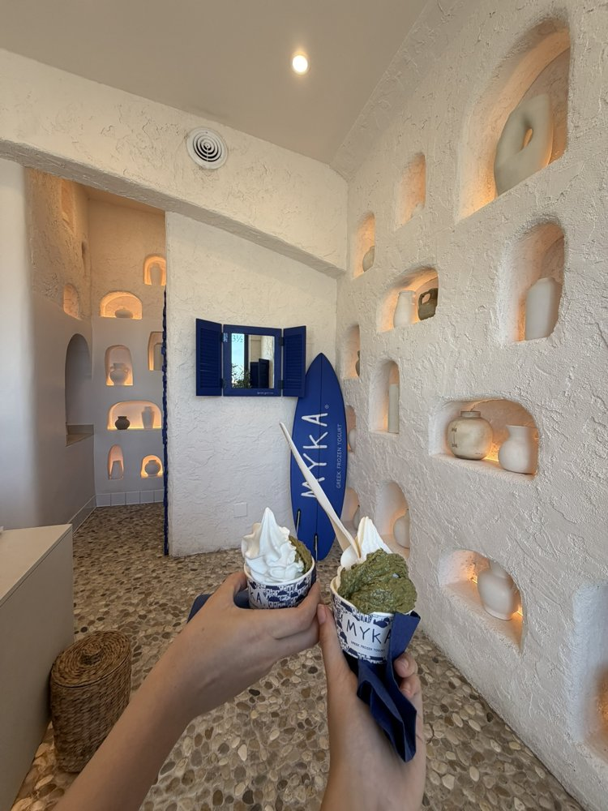
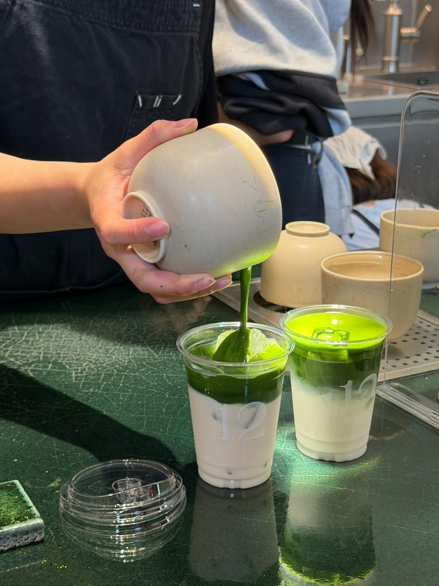

Hi, my name is Chau!

Eating good food 🍜
I'm always on the hunt for a new spot to try.

Sweet treats 🍦
There's always room for dessert.

Drinking matcha 🍵
My forever favorite drink.
Welcome to my personal site and portfolio! Here you can find information about my projects, skills, and experiences. Feel free to explore and reach out if you have any questions or opportunities!

I'm always on the hunt for a new spot to try.

There's always room for dessert.

My forever favorite drink.